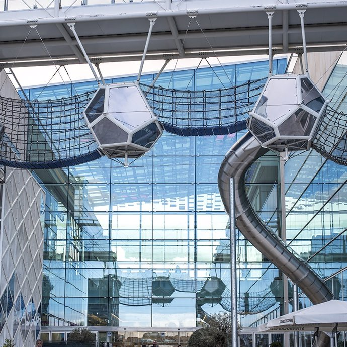
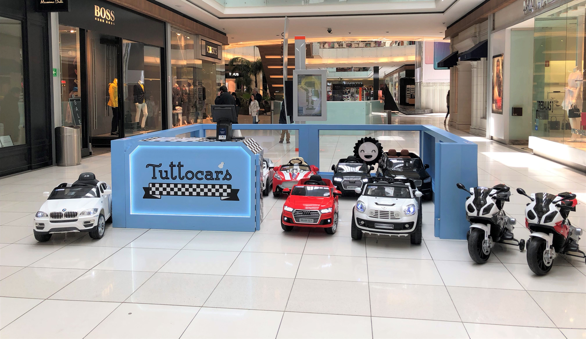
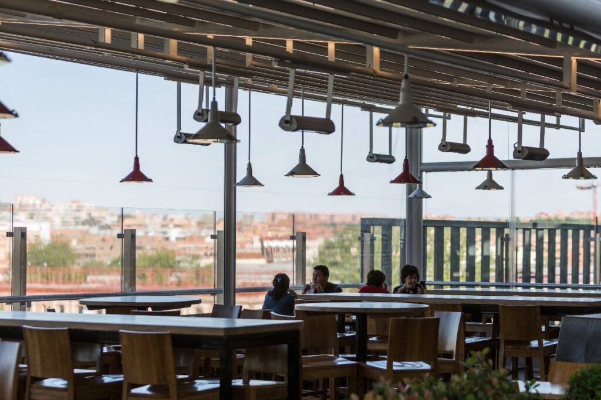
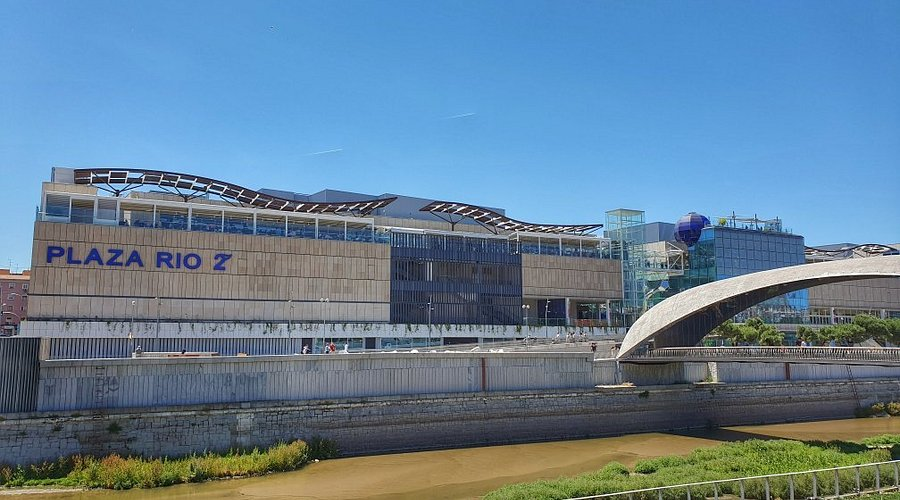

Descubre Río Plaza 2
Río Plaza 2 es mucho más que un centro comercial: es un espacio pensado para ofrecer experiencias únicas a cada visitante. Con una amplia variedad de tiendas, propuestas gastronómicas para todos los gustos y un ambiente moderno y acogedor, Río Plaza 2 se ha convertido en el punto de encuentro ideal para familias, amigos y amantes de las compras. Cada rincón de este centro invita a disfrutar de momentos especiales, con eventos, actividades y sorpresas que renuevan la experiencia en cada visita. Río Plaza 2 combina comodidad, estilo y entretenimiento en un solo lugar, haciendo que cada día sea una nueva oportunidad para vivirlo al máximo. Río Plaza 2 espera a todos aquellos que buscan más que un paseo: buscan una experiencia inolvidable.
Imagen 1 
imagen 2 
imagen3 
imagen4 
Te esperamos